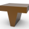

16.4. Create
 | Create electrode. → | Electrode |
Extract electrode geometry and add an electrode holder and other additional information about an electrode.
A workplane in the electrode reference point is created in parallel. This is used for calculations while the electrode is being created, and is not bound to the electrode. A change to this workplane has no effect on the electrode and its position coordinates. It can be used to dimension the position reference.
An electrode cannot be changed retrospectively. To make changes, the electrode must be created again. To change electrode holders and raw material, break up the group, delete the electrode holder and the block and manually compose a new electrode using the user defined command.
The software will automatically create a coordinate label for the electrode in relation to the reference point. The coordinates and text can be read from every ‘View’ and in the electrode summary.
Note
With a rotated electrode, the target position must not be rounded or changed in any other way, otherwise the rotation target will no longer be correct!
The entries can only be confirmed if Automatic computation has been run.
Reference system
WP: Select a workplane as a reference system from the list or in the graphics area  . If no reference systems are available in the list, create a workplane using the Create reference system command.
. If no reference systems are available in the list, create a workplane using the Create reference system command.

Automatic computation: A preview of the electrode and electrode holder is shown based on the selected entities and options.
Tip
Only select this option once all entries have been selected, in particular, the faces for the erosion area.
Electrode name and description
Change the second half of the name for the electrode. The first half of the name is predefined in the Electrode options. Enter a description for the electrode.
If the existing second half of the name of a derived electrode is entered repeatedly, it is clear that another version of this electrode should be created. In this case, a further counter is automatically inserted as the third section of the electrode name.
Raw material shape
Cylinder: Use round raw material  .
.
Cuboid: Use cuboid raw material .
Electrode shape
Select the faces for the electrode geometry either directly or using a closed chain of curves that is to be projected onto the model.
Faces: Select faces for the electrode geometry  . When switching from Contour to Faces, the last value used in the dialog for → is restored.
. When switching from Contour to Faces, the last value used in the dialog for → is restored.
Contour: Select a planar closed chain of curves outside the model  . The curves will be projected onto the model in the Z direction. If faces of the model protrude beyond the chain of curves, the faces of the electrode geometry will be trimmed along the chain. Any type of curve (including NURBS) is possible. The → option is automatically set to the value 0 and cannot be changed.
. The curves will be projected onto the model in the Z direction. If faces of the model protrude beyond the chain of curves, the faces of the electrode geometry will be trimmed along the chain. Any type of curve (including NURBS) is possible. The → option is automatically set to the value 0 and cannot be changed.

Tip
Determine areas to be eroded with the help of the → command.
Direction
Create a side electrode. Necessary if side approach is not possible because direct side access is prevented by geometry. The electrode is created with a bend using a joint. The joint is taken into consideration during the collision check. Enable the Side electrode option.
Specify an erosion direction  .
.
Select: Straight curve, edge or geometry, from which an axis can be calculated - e.g. select rotationally symmetric geometry.
2 points: Select two points.
The direction is shown by a direction arrow. Double-click on the arrow with the left mouse button to invert the direction.
Useful information, for example on how to avoid collisions, is shown in the Info tab.
Electrode holder
Select the Insert option to attach an electrode holder to the electrode geometry.
Multiple electrode holders may be defined for the same raw material size. Select an electrode holder. Click the line for the electrode holder with the left mouse button. The line will be highlighted.
Extension mode
Local: Additional faces will be generated  at the face boundaries of the erosion face area using a tangential extension
at the face boundaries of the erosion face area using a tangential extension  . The erosion faces remain unchanged. This is not possible with Modify bounding box.
. The erosion faces remain unchanged. This is not possible with Modify bounding box.

Box: Guide the Tangent extension up to the bounding box. The affected faces of the erosion face area itself will be enlarged based on their parameters.
Attributes
Adjust the attributes for geometry, technology, document, position reference and eroding machine that were transferred from the Electrode options.
If the Collision avoidance option is disabled, use the Info tab to check whether colliding faces have been reported.
Check and adjust the determined Target position.
Which additional information is provided when creating an electrode?
When creating an electrode, information is made available on the Info tab.
Info / warning | Purpose |
|---|---|
Length of useless raw material | Distance from the electrode contact face to the start of the raw material. Reduce this value by increasing the block height. This reduces the remaining material to be milled off. |
Minimal rib distance | In the case of multiple ribs, i.e., multiple electrodes on the same block or electrode holder, the smallest distance between the ribs is given. Use this to check if the distance is sufficient for the diameter of the planned milling tool. A stabilization extension is not included in the calculation. |
Selected electrode holder | The automatically selected electrode holder is displayed. |
Raw material dimensions | The dimensions of the automatically selected raw material are displayed. |
Colliding faces | Used to report the presence of a collision if collision avoidance is disabled. Manually optimize the length of the electrode extensions so that a collision no longer occurs and excess length is avoided. |